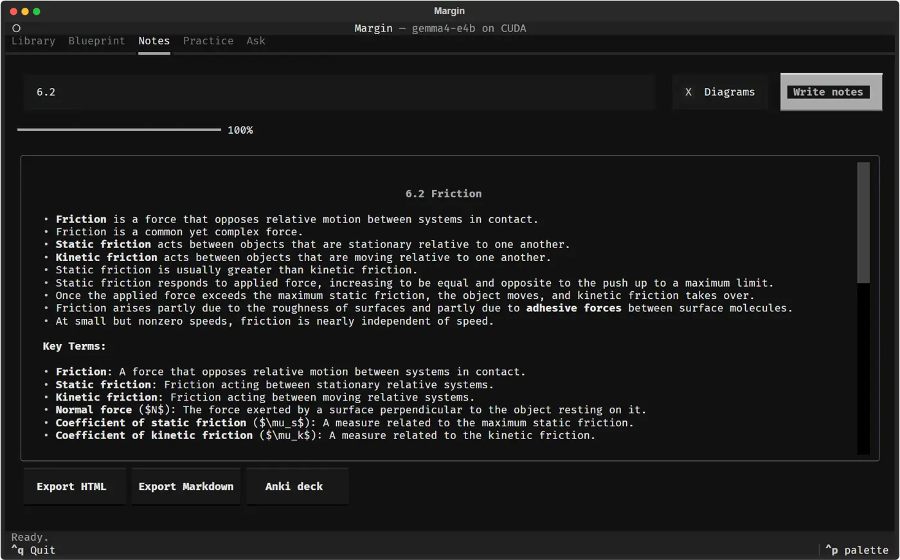
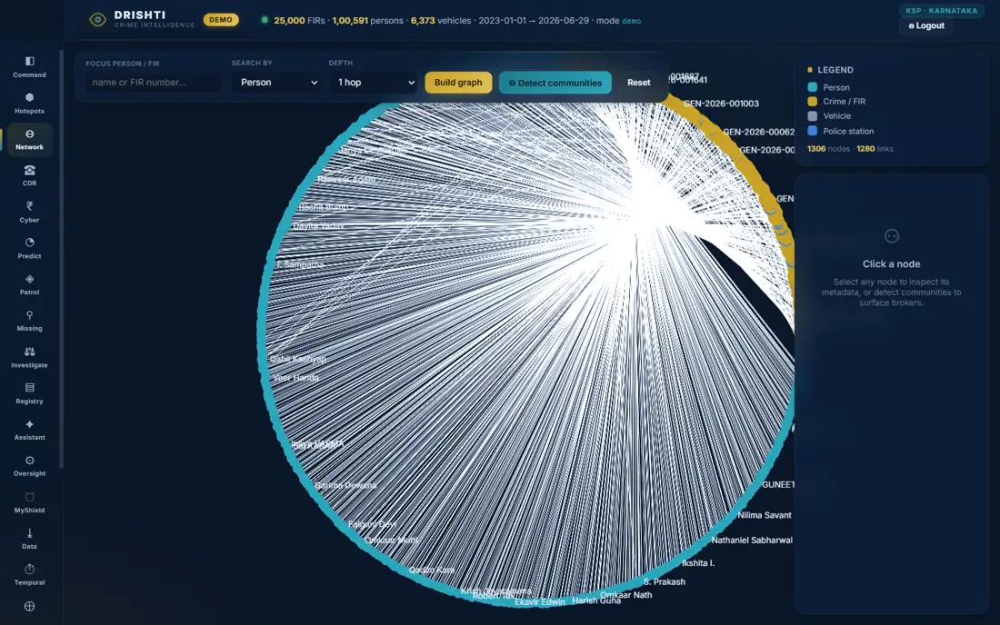
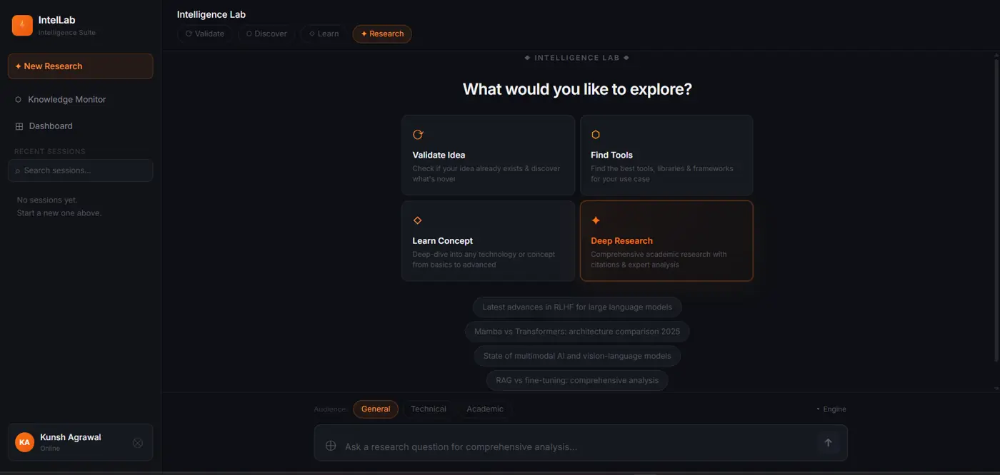
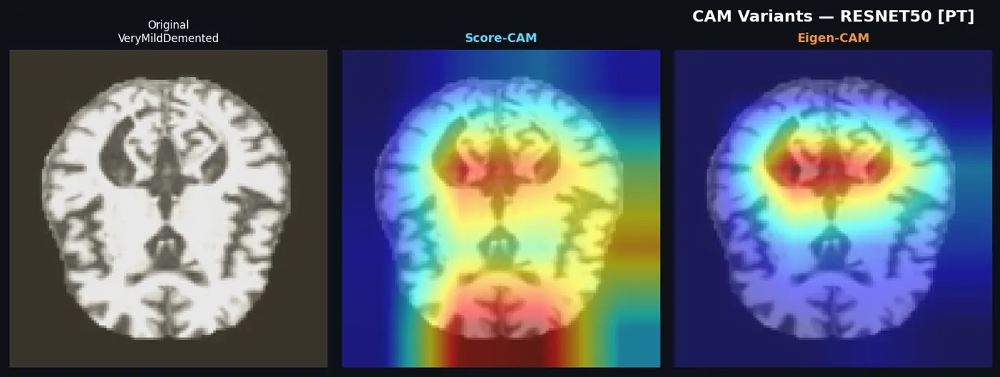
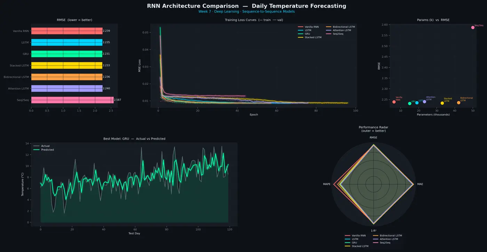

Reads your books and past papers, finds what the exam asks, and writes checked notes and practice questions. Fully offline.
93%of favoured chapters found on generated papers
105/105diagrams render, output from nine models
Hi, I'm an AI and ML engineer at MANIT Bhopal
I build machine-learning tools, then measure whether they work.
Local language models, retrieval, agents, computer vision and sequence models. The network shows which of these went into each project.
Scroll for all projects, my journey and moreHover a skill to trace it. Pick a project to open it.
Six projects, newest first. Open any of them for the full story, results and code.

Reads your books and past papers, finds what the exam asks, and writes checked notes and practice questions. Fully offline.

Crime hotspots, suspect networks and a cited assistant over FIR records, built for Karnataka State Police.

Searches the web, arXiv and GitHub, grades its own answer and keeps going until it is good enough.

Five CNNs grade Alzheimer's from MRI scans; six explainability methods show where they looked.

Seven recurrent networks, one dataset, one test split: a fair fight from plain RNN to Seq2Seq.
A bag-of-words baseline beat a Bi-LSTM on two datasets and trained over a thousand times faster on IMDB.
From my first course to leading a datathon team, in about a year.
MANIT Bhopal. Finished the Machine Learning Specialization, CS50P and CS50x.
First deep-learning project: five CNNs and six explainability methods.
Seven RNNs for forecasting, and a text-classification study. Completed IISc's Foundations of Deep Learning.
First agent: a self-grading Self-RAG loop, deployed with sign-in and a live demo.
Built DRISHTI with three teammates for Karnataka State Police.
An offline study assistant with 207 tests and every claim backed by an evaluation.
First-year Electronics and Communication student who learns a model by building it, then testing it until the numbers are honest.
8.93 CGPA out of 10
B.Tech, Electronics and Communication at MANIT Bhopal, 2025–2029
I'm looking for internships and research projects in machine learning. The fastest way to reach me is email.